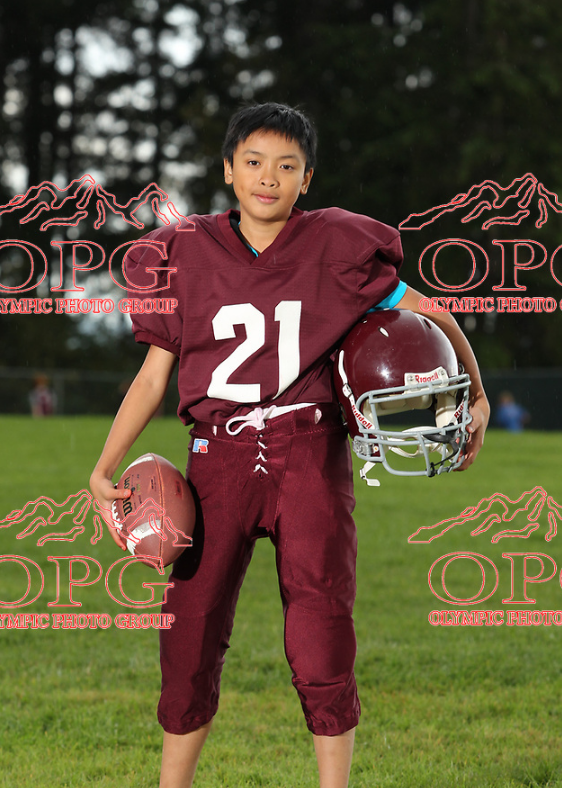
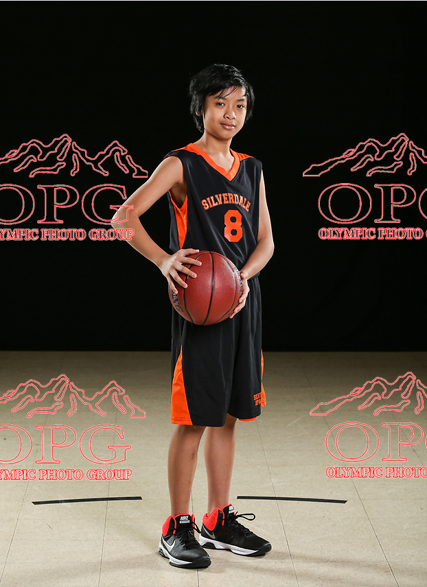

The is my life in Volleyball
My love for volleyball started with the anime Haikyuu!!, which sparked my interest in the sport and from there it grew. I was a part of a little tournament in high school for fun with my girlfriend which led me to start going to some open gyms. My girlfriend was already playing seriously, so I wanted to get better and spend more time with her. Volleyball quickly became the sport I spent the most time on, whether at school, at local gyms, or practicing with friends. My brother and I even started a YouTube channel where we document the open gyms we attend, sharing tips, highlights, and our favorite moments.
The is my life in Football
I always wanted to play more football, but the only organized experience I had was in middle school. Even though I didn’t continue playing competitively, I still love tossing the ball around with friends and watching games. Growing up in Washington, I became a dedicated Seahawks fan and thankfully was able to watch them win the Super Bowl in 2014, I still watch the NFL, but now with Fantasy Football, I enjoy watching the players I have more now.
The is my life in Basketball
I grew up playing basketball and have been around the sport my entire life. Most of my experiences were casual, just shooting hoops with friends or playing at school, though I did play for a middle school club team once. Even now that I’m out of school, I still enjoy playing occasionally just for fun. My favorite player is LeBron James, so I naturally follow whatever team he’s on, cheering for him no matter where he plays. Basketball has always been a big part of my life , and it’s a sport I enjoy both playing and watching.